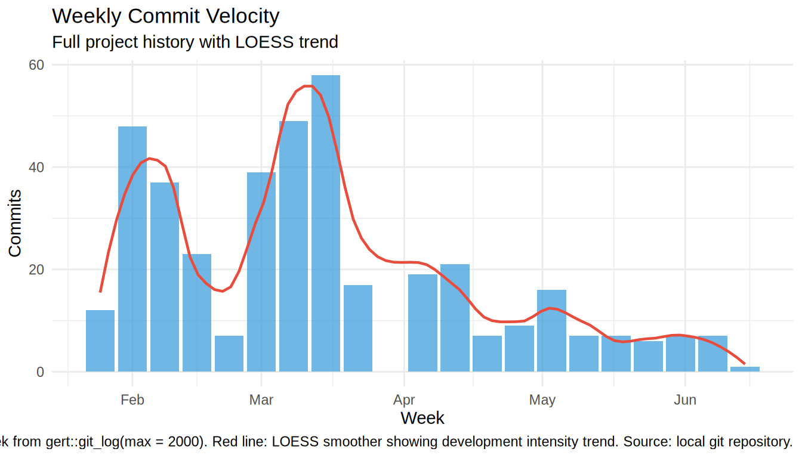
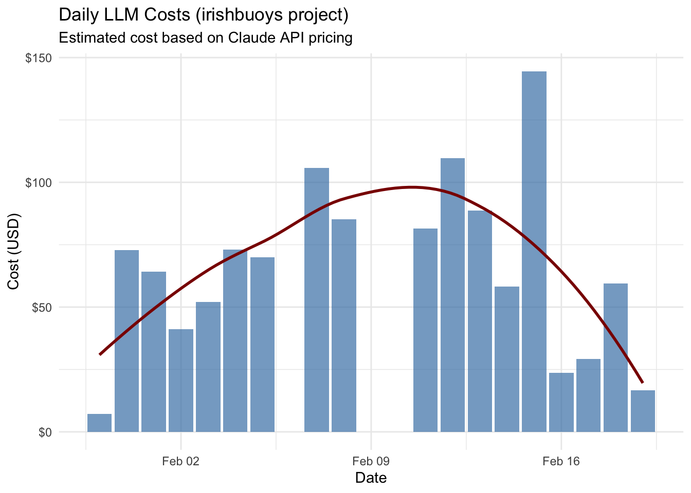
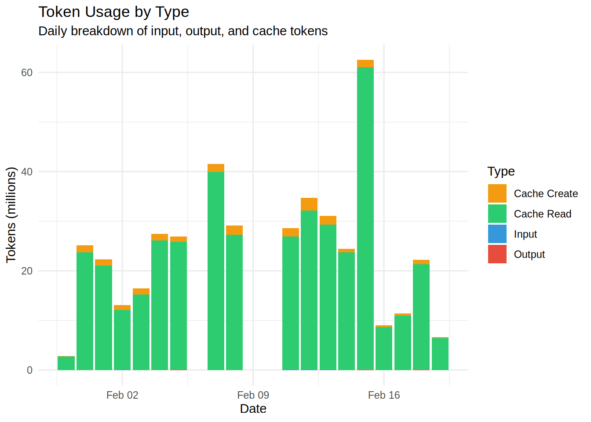
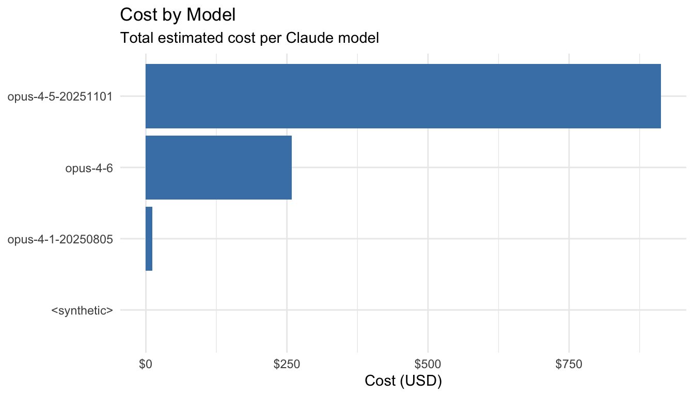

| Metric | Value |
|---|---|
| Total Observations | 3,710 |
| Database Size | 2.51 MB |
| Active Stations | 5 |
| Commits (30d) | 92 |
| Last Updated | 2026-02-13 18:25 UTC |
| Date Range | 2019-01-01 to 2026-06-15 |
Telemetry
Overview
Project health and data pipeline metrics for the irishbuoys package.
Key Metrics
Data Coverage
Station data availability and freshness across the full historical period (2019-present).
Coverage by Station
Data Freshness
Data Quality
QC flag trends and rogue wave detection metrics for the full historical period.
QC Flag Distribution
QC flags: 0=unknown, 1=good, 9=missing. Monthly distribution across full historical data, colored by season.

Rogue Wave Frequency
Rogue waves: Hmax > 2 x significant wave height. Monthly event counts across full historical period.
Data Not Available
The
plot_telemetry_rogue_frequency
target has not been built.
Run
targets::tar_make()
to generate.
Database
Storage metrics and table information for the DuckDB database.
Table Summary
Storage Size
| Metric | Value |
|---|---|
| File | inst/extdata/irish_buoys.duckdb |
| Size | 2.51 MB |
| Last Modified | 2026-02-12 21:56 |
Pipeline
Targets pipeline status, timing metrics, and execution history.
| Metric | Value |
|---|---|
| Total runtime | NA seconds |
| Average per target | NA seconds |
| Slowest target | NA seconds |
| Last run | NA |
Target counts, size, and timing by pipeline plan (from R/tar_plans/plan_*.R).
No target metrics available
Largest targets by stored object size in _targets/ store.
No target metrics available
Slowest targets by execution time — candidates for optimization.
No target metrics available
Tests
Unit test and quality assurance metrics for the irishbuoys package.
Aggregated counts of tests, expectations, and snapshot tests grouped by test category.
| Category | Description |
|---|---|
| Unit Tests | Standard test_that() blocks testing individual functions |
| Adversarial/Edge Cases | Tests for NULL, NA, empty inputs, boundary conditions |
| Defensive/Null Guards | Tests verifying cli::cli_abort() on invalid inputs |
| Contains Snapshots | Files with expect_snapshot() calls |
| Integration Tests | End-to-end tests spanning multiple components |
Git Activity
Repository commit history and development activity.
Weekly commit counts across full project history.


GitHub repository activity: open/closed issues and pull requests.
GitHub API error: Invalid GitHub PAT format ℹ A GitHub PAT must have one of three forms: • 40 hexadecimal digits (older PATs) • A 'ghp_' prefix followed by 36 to 251 more characters (newer PATs) • A 'github_pat_' prefix followed by 36 to 244 more characters (fine-grained PATs) ℹ Read more at <https://gh.r-lib.org/articles/managing-personal-access-tokens.html>.
Recent GitHub Actions workflow runs: name, status/conclusion, and timestamp.
No CI workflow data available
Project Files
R source files, test files, lines of code, exported functions, and package version.
LLM Usage
Claude Code usage statistics for the irishbuoys project.
Usage Summary
Estimated daily costs based on Claude API pricing.

Breakdown of input, output, and cache tokens. Cache tokens reduce costs.


| Model | Input | Output | Cache Create | Cache Read |
|---|---|---|---|---|
| Opus 4.5 | $15/M | $75/M | $18.75/M | $1.875/M |
| Sonnet 4 | $3/M | $15/M | $3.75/M | $0.375/M |
| Haiku 3.5 | $0.80/M | $4/M | $1/M | $0.08/M |
Data source: Claude Code session files in ~/.claude/projects/.
Prediction Tracking
Calibration metrics for Claude Code probability assessments during development sessions. Brier score: 0 = perfect, 0.25 = uninformative baseline.
Summary
Data Not Available
The
plot_telemetry_predictions_calibration
target has not been built.
Run
targets::tar_make()
to generate.
Data Not Available
The
plot_telemetry_predictions_rolling_brier
target has not been built.
Run
targets::tar_make()
to generate.
Data Not Available
The
plot_telemetry_predictions_outcomes
target has not been built.
Run
targets::tar_make()
to generate.
Data Not Available
The
plot_telemetry_predictions_confidence_dist
target has not been built.
Run
targets::tar_make()
to generate.
Data Not Available
The
table_telemetry_predictions_all
target has not been built.
Run
targets::tar_make()
to generate.
Data Not Available
The
table_telemetry_predictions_calibration
target has not been built.
Run
targets::tar_make()
to generate.
Validation Reports
Pointblank validation reports embedded below. See also: analysis_data Validation | rogue_wave_events Validation
analysis_data
rogue_wave_events
Generated: 2026-06-15 13:23 UTC All data loaded from pre-computed targets via tar_load() Data range: Full historical (2019-present), NO sampling